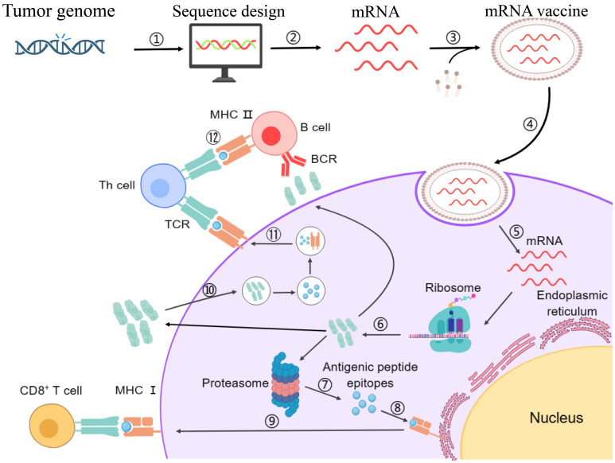
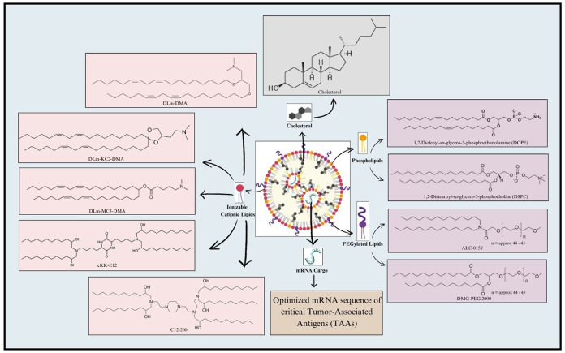
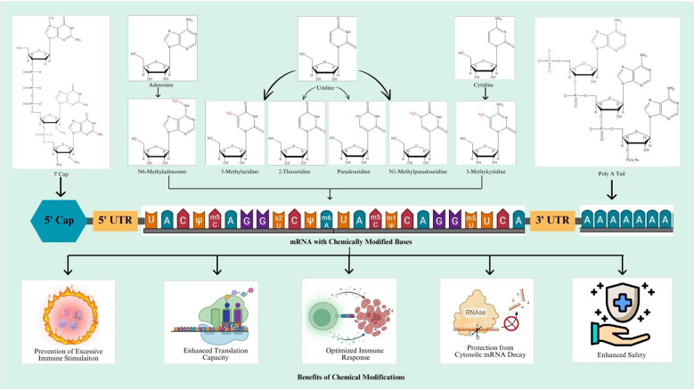

8月19日，莫德纳单日暴涨177%，默沙东大涨12.6%——资本市场被一件事彻底点燃：全球首款个性化的 mRNA 癌症疫苗，临床三期成功了。
这款药叫 Intismeran Autogene（研发代号 mRNA-4157 / V940），是莫德纳的mRNA技术 + 默沙东的免疫王牌 K药（可瑞达）的合体。它在完全切除后的高危黑色素瘤（IIB-IV期）患者的III期试验（INTerpath-001）中，同时达到无复发生存期（RFS）和无远处转移生存期（DMFS）两大主要终点。
这是mRNA技术在肿瘤领域的第一个有分量的III期阳性结果。市场如此兴奋，是因为它发生在黑色素瘤上——而黑色素瘤的身份很特殊：在传统治疗（放化疗）语境里，它曾是预后最差、"最难啃"的癌症之一；但在免疫治疗和肿瘤疫苗的语境里，它恰恰是条件最优越的癌种——紫外线诱导的高突变负荷提供充足新抗原、免疫细胞浸润好、对PD-1抗体高度响应。正因如此，这次成功意味着"个体化"方法论在最理想的癌种上得到了验证，理论上可以复制到其他癌种——但"最理想癌种上的成功"离"泛癌种成功"，还隔着很长的难度阶梯（详见第六章）。高盛当天把默沙东目标价从140美元上调到160美元。
这一篇文章，我们把这件事的两面都摊开：一面是资本市场狂欢的底层逻辑（它值钱在哪、空间多大），一面是医学与医药的真实尺度（它疗效多强、能不能治愈、成本多高、能不能获批）。野心与现实，缺一不可。
资本可以靠叙事，医学只看数字。先看疗效的真实刻度——拿这次III期和此前IIb期（KEYNOTE-942）的真数据说话：
| 临床终点 | 数值 | 含义 |
|---|---|---|
| 无复发生存期（RFS） | 复发或死亡风险 降低49%（HR=0.51） | 疫苗+K药 vs 单用K药，显著降低复发 |
| 远处转移或死亡（DMFS）3年 | 风险 降低62% | 阻止癌细胞远处转移的能力更强 |
| 远处转移或死亡（DMFS）5年 | 风险 降低59%（HR=0.411） | 疗效持久，5年仍稳健 |
| 2.5年无复发生存率 | 74.8%（联合组） | 远高于单药组的约62% |
| 总生存期（OS） | 呈现获益趋势 | 探索性终点，最终数据待披露 |

把它翻译成人话：对高危黑色素瘤术后患者，在标准K药基础上叠加疫苗，能让"复发或死亡"的概率下降大约一半。这是循证医学上扎实的阳性结果——3年、5年数据一致、方向稳定、HR显著。但也请注意两个词："显著改善"，不是"治愈"；而且仅对这一小群患者、这一种特定癌种有效。
与"以前的癌症疫苗屡屡失败"相比，这是一次真正的突破，是mRNA平台在肿瘤领域第一个有分量的证据。疗效确凿 ≠ 治愈，但"这条路走得通"已得到验证——这正是资本狂欢的真正锚点。
一次临床成功，凭什么值177%？因为资本市场买的不是这组数据本身，而是三个被它"点亮"的新预期：
还有一个被资本市场看重的商业结构：这是一笔双赢——莫德纳出mRNA平台（技术），默沙东出K药+全球商业化网络（渠道）。莫德纳靠K药这个"黄金搭档"把疫苗拽上市；默沙东看中的则是K药专利临近到期（2028年前后）后的"后K药时代"新增长曲线。所以热捧是"技术平台 × 临床渠道"双预期共振。
177%里既有"范式确立"的长期逻辑，也有"事件驱动"的短线情绪。真正的收入和利润，要等监管获批、放量销售后才能兑现。追高的人买的是"确定性最高的预期"，不是"已经落袋的钱"。
"人类要战胜肿瘤了，以后不怕癌症了"——这句话在自媒体刷屏，但作为医学判断，它至少有三处误导：
癌症是几十上百种"基因病"的统称。一个对黑色素瘤有效的疫苗，不等于通吃所有癌症。不同癌种、不同患者的突变截然不同，哪些突变能成靶点、能否激活足够强免疫、肿瘤会不会逃逸——都得一个一个癌种、一个一个临床去试。这是"战胜肿瘤"最朴素也最残酷的真相。（《自然》杂志观点）
既然资本在炒，那它到底值多少？答案隐藏在它的商业逻辑里：它就是贵。因为它不是传统疫苗，而是"一人一策"。
传统疫苗：一个配方，批量生产，一百万支一个价。它：每人一个配方——先对患者肿瘤做多区域活检和基因测序（NGS），再用AI从几百个突变里筛出专属"新抗原"，再为这一位患者单独设计、生产、质控，等于给每个人都"开一条独立产线"。
| 环节 | 现状 |
|---|---|
| 单疗程制造成本 | 超过10万美元，分析师普遍估算 10万-30万美元 |
| 生产周期 | 从活检到出厂约 6-9周，受限于术后辅助窗口，非常赶 |
| 市场预测定价 | 按生物制药毛利倒推，主流预测 30万-50万美元/疗程；William Blair给出 47.5万美元测算 |
| 生产模式 | "一患一产线"，单批次规模极小、批次极多，难以规模摊薄 |
| 作废风险 | 若患者在生产完成前复发或恶化，定制产品直接报废，成本无法摊分 |
对资本来说，这是高单价 + 高毛利的诱惑；对患者来说，这是普通家庭难以承受的天价。华尔街对它的年销售额预测从25亿到500亿美元不等，相差20倍——定价与市场规模的高度不确定，恰恰说明这门生意"下限很低、上限很高"。
如此高的单人成本，直接叩击医保支付能力。刚上市阶段，普通家庭很难承受，能负担的将是有限人群。要惠及大众，必须靠规模化降本 + 医保谈判 + 可能的"半个性化"路线。而在这之前，"天价药"标签会一直伴随着它。
除了"贵"和"慢"，它还有几道生物学上的硬门槛，专业上清清楚楚：
第五章算过"一人一条产线"的成本账，但那本账是从"设计成功"才开始记的——产线上游还藏着一道更隐蔽的漏斗：患者要先交出合格的组织，组织要测得出足够的突变，突变要筛得出一组可用的靶点。任何一格卡住，这个人的"专属药物"就根本不存在。KEYNOTE-942恰好留下了完整记录：224人接受筛选，185人取得可用肿瘤组织，156人完成测序与新抗原预测——设计成功率84.3%；最终入组157人，其中联合组仅107人真正接种。也就是说，在疗效数据诞生之前，约三成患者已经在这条流水线上消失了。
真正的悬念在于：84.3%是在顶尖癌症中心、百余人小样本里跑出的成绩。INTerpath-001放大到约1089人、铺开多中心真实环境后，这个数字还站得住吗？它直接决定商业模型的分母——每流失一名患者，一条已开工的定制产线就整批报废，第五章说的"作废风险"将以更高频率兑现。
| 漏斗三格，各卡住谁 | 卡在哪里 |
|---|---|
| 第一格 · 肿瘤组织拿不到 | 长在"禁区"：胰腺、脑干等深部肿瘤穿刺风险大于收益，细针只能抽出零星细胞而非足量组织；长得"太坏"：快速生长的大肿块中心常见坏死，可测的活性区域不足；排不上号：标本优先保障病理诊断与分期，剩余部分才轮到研究，小标本往往所剩无几；来不及：辅助治疗须术后13周内启动，取样、转运、质检任一环延误即出局。 |
| 第二格 · 组织到手仍做不成 | 测序端：新抗原预测高度依赖肿瘤转录组，而手术标本中的RNA极易降解，冻存转运稍有闪失即作废；全外显子测序还需肿瘤与正常血液配对，覆盖度不够就检不出体细胞突变。设计端：候选突变要连闯HLA结合力、表达量、克隆性数道算法闸门，全部落选等于白测。生产端：即便设计成功，GMP合成到质控放行仍可能在6-9周窗口内偶发失败。 |
| 第三格 · 测完了仍没有足够新抗原 | 根子是突变库存不足：低TMB肿瘤全外显子可能只有十几个体细胞突变，同义突变天然无效，余下的还要挑"能结合HLA、确实表达、位于克隆主干"的，池子随时见底。KEYNOTE-942的佐证：91%患者拿到满编34个新抗原，但分布范围为9-34个，约一成人只装上了大半只"弹夹"。还有一层常被忽略：新抗原必须经患者自身HLA分子呈递才能被免疫系统看见，若发生HLA杂合性缺失，可选表位再被砍掉一半。 |
第四章已点出"只在优等生癌种上成功"，这里把话拆透：对照上面三格漏斗，黑色素瘤几乎每格都是免检通道——手术标准流程本来就切下完整瘤体，第一格直接过关；紫外线签名让它的突变库存动辄数百个，第二格可以从容挑选；作为PD-1响应率最高的癌种之一，K药底盘本身够强，凑满一组高质量靶点的概率自然最高。三个环节全绿，III期想输都难。
可一旦离开这间考场，绿灯就会逐格变灯。非小细胞肺癌是第一张加难度的考卷：同样开胸可取材、突变负荷中高，看似照搬即可，但两项进行中的III期要直面更凶的瘤内异质性、吸烟与不吸烟人群两套迥异的突变谱，以及EGFR/ALK驱动基因人群对免疫治疗先天响应不佳的现实——intismeran在那里的及格线会高得多。胰腺癌、大部分肠癌则是另一个极端：这些"冷肿瘤"既没突变（无弹可用）又缺少T细胞浸润（打进去也白打），mRNA-4157早期探索中此类瘤种的信号远不及黑素瘤。顺带回答一个高频疑问——TMB低，是不是K药不行？不是。K药只负责松开刹车，它需要现成的T细胞当子弹；TMB低导致无弹可用，是新抗原路线自身的上游天花板，换任何检查点药物都一样。退一步说，即便勉强凑出几个靶点，冷肿瘤的免疫抑制微环境又会把T细胞挡在门外——上游不开工、下游攻不进，两头堵死才是低突变肿瘤的真死结。
"黑素瘤成功"≠"平台成功"。换个癌种，就得重新回答：组织给得出吗？靶点凑得够吗？T细胞进得去吗？黑色素瘤三题满分；非小细胞肺癌、肾癌半绿半黄；胰腺癌、MSS型肠癌几乎全线红灯。正在推进的8项II/III期（两项肺癌III期、肾癌、膀胱癌等）本质上是逐癌种批改这份答卷——INTerpath-001只是第一份被公布的答案，远不是终局。

它强，是因为对"容易打"的癌种有效；它难，是因为要跨越制造、逃逸、微环境、递送四道坎，才能把"有效"推广成"普遍有效"。
III期成功 ≠ 获批上市。数据亮了绿灯，后面的路还长：
| 关卡 | 现实情况 |
|---|---|
| 监管审批 | 目前全球均未获批。企业将向FDA/EMA提交申请，乐观预估最快2027-2029年海外才有望商业化 |
| 国内引进 | 待海外获批后，国内的引进、临床、审批还要更长时间 |
| 产能扩产 | 莫德纳马萨诸塞专用设施目前只能支撑千人级别临床试验；需求到数万人，只能逐条复制产线，扩产极慢极贵 |
| 定价与医保 | 高成本 + 未定定价 → 进医保存疑 → 可及性受限 |
| 市场分歧 | 年销售额预测从 25亿到500亿美元不等，差20倍，高度不确定 |
三个关键变数：①III期数据能否顺利转化为监管认可（数据扎实，可能性较高）；②肺癌等其他癌种的III期能否复制成功（决定天花板）；③生产成本能否下降（决定商业回报）。获批是"时间问题"，但"多远、多贵"仍悬。
往大了看，这次成功给整个医药行业划了一条新主线。至少四层启示：
这不是一次"利好出尽"的事件，而是一个"技术范式 + 商业模式 + 产业配套"三条线同时被点燃的结构性拐点。它也是医药投资从"仿制/跟随"走向"源头创新"的具象样本。

资本市场用脚投票，券商用测算给"天花板"定锚：
| 测算口径 | 数字 |
|---|---|
| 中信建投 | 2035年全球mRNA肿瘤疫苗市场约210亿美元，国内市场约100亿元 |
| 贝哲斯咨询 | 2029年全球mRNA疫苗与治疗药物市场约549亿元，年复合增速8.87% |
| 行业远期估算 | 若更多癌种（肺癌、肠癌、胰腺癌等）落地，全球空间有望突破 500亿美元，近似"再造一个疫苗行业" |
注意，这些数字的潜台词不是"现在的规模"，而是"如果个体化肿瘤疫苗像免疫治疗那样，从黑色素瘤扩散到肺癌、肠癌、胰腺癌"的远期想象。目前能确认的是：商业化正从"概念"走向"落地"，这是最大的变化。
接下来真正值钱的变量：①监管审批进度；②肺癌等癌种III期能否复制成功；③定价与医保纳入；④个体化疫苗规模化降本。这四件事决定500亿美元是"画饼"还是"倒计时"。
海外"核弹"一响，A股医药直接高潮，资金火速寻找"中国映射"。但冷静下来，中美在mRNA癌症疫苗上的真实差距，要先认清。
先看总量：中国的mRNA能力并不弱。在研mRNA管线超过4751个，数量全球第一。这条赛道并不缺人。
再看关键节点：真正的落差在"临床阶段"。当莫德纳/默沙东已跑到千人规模的全球III期时，国内同类项目整体仍普遍处于早期临床（I/II期）。这是"时差"，不是"能不能做"的问题。
| 维度 | 美国（Moderna/默沙东） | 中国（对标企业） |
|---|---|---|
| 个体化疫苗临床阶段 | III期 双终点成功 | 整体早期临床（I/II期） |
| 代表性企业 | Moderna、默沙东、BioNTech | 艾博生物、石药集团、沃森生物等 |
| 平台成熟度 | 已验证的LNP+个体化流程 | 自主LNP递送、规模化平台建设中 |
| 出海/合规 | 全球注册策略成熟 | 国际化仍在起步 |
具体到公司：艾博生物是市场提及度最高的"中国版Moderna"标的——管线覆盖新冠、带状疱疹、流感、个性化肿瘤疫苗，已与沃森合作实现mRNA新冠疫苗商业化，并搭建自主LNP递送系统；石药集团（SYS60系列）、沃森生物也在推进。
它不等于"抄作业"，而是确认中国在mRNA底层技术上具备打硬仗的平台能力。缺的主要是时间——把早期管线推进到III期、拿到全球级别的大样本数据。在那之前，A股映射更多是情绪与预期的映射，终要靠临床和商业化兑现。
把资本与医学放一张表，一目了然：
| 维度 | 资本视角 | 医学视角 |
|---|---|---|
| 关注点 | 范式突破、癌种可复制、平台重估 | HR值、生存率提升、能救哪类病人 |
| 对"177%" | 押注"未来无数癌种"的预期 | 提醒"只是黑色素瘤一个癌种" |
| 对"治愈" | 叙事放大、情绪推动 | 谨慎：辅助治疗 + 联合用药 + 有限癌种 |
| 对"成本" | 高毛利与市场空间 | 患者可及性与医保可行性 |
| 对"时间" | 越早获批越有想象 | 2027-2029只是乐观起点 |
| 风险偏好 | 为"可能性"买单 | 只认"证据" |
这份分歧本身，就是最值钱的信息：资本买的是"故事的期权"，医学等的是"证据的兑现"。两者都真实，但如果你用自己的真金白银或亲人的健康做决策，务必分清自己此刻读的是哪一版叙事。
回到最初的问题——mRNA癌症疫苗，真有网上说的那么神吗？答案是分层的：
作为医学起点，它是一大步。这是mRNA技术在肿瘤领域第一个有分量的III期阳性证据，是"个性化癌症疫苗"从概念走向临床的里程碑。它的意义，在于证实了一条路走得通——这是资本狂欢真正的底气。
作为"惠及大众的药"，它还差得远。它只在黑色素瘤这一个高突变癌种、术后辅助这一个场景、联合K药一个组合里，把复发风险降了约一半；成本数十万美元、生产要数月、医保暂不可及、其他癌种疗效待验证。
177%的股价，讲的是十年想象；医学上那句"复发风险降一半"，讲的是此刻的疗效。两者都真实，但别混淆。真正的机会与理性，都在"从III期成功，到获批、降价、进医保"这段真实的路程里——那才是看得见摸得着的未来。
参考资料：Moderna/默沙东联合新闻稿及ASCO 2026五年随访数据，《自然》报道，科技日报、人民网、中华网、21世纪经济报道、财联社、新浪财经、中信建投研报、PMC综述（mRNA Cancer Vaccines / Neoantigen mRNA Vaccines）、Alacrita行业白皮书等公开信息，经多源交叉验证。数据以官方最新发布为准，文中测算与定价为机构/分析师观点，不构成投资建议。投资有风险，入市需谨慎。